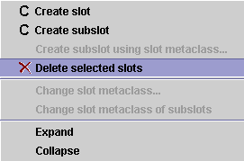

Deleting a Slot
From the Project
Deleting a Slot
From the Project

You can delete a slot so that it is no longer part of the knowledge
base. To do this:
- In the Slots Tab, highlight the slot which you want to remove.
- Click the Delete
 slot
button or click the right mouse button and select Delete
selected slots from the Slot menu.
slot
button or click the right mouse button and select Delete
selected slots from the Slot menu.

The slot no longer appears in the list of slots. The
slot is also deleted from any classes where it appears.
To remove several slots at once:
- In the Slots Tab, highlight the slots you wish to remove.
To highlight multiple slots, hold down the Ctrl key while clicking each
slot. To highlight a range of slots, click the first slot, then hold down
the Shift key and click the last slot in the range.
- Click the Delete
slot
button or click the right mouse button and select Delete
selected slots from the Slot menu. The slots no longer appear in the list of slots and are deleted from any
classes where they appear.
Deleting a slot cannot be undone. However, if you close Protégé-2000 without saving changes, you will revert
to the last saved version. If you have made extensive changes to your project during the current session, you may wish to save before deleting slots. To do
this, select Save from the Project menu.
You can also remove a slot from a specific class where it appears without
deleting it from the project.
See Removing a Slot for more information.
Next: Adding an Existing
Slot to a Class
Slots Table of Contents